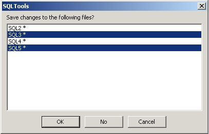

File -> Close All
Previous
Top
Next
Close all opened documents. If there are some modified files whitch haven't been saved, next dialog will appear to choose which files must be saved.

Highlighted documents will be saved. Click on document names to change highlight status.
See
File Menu